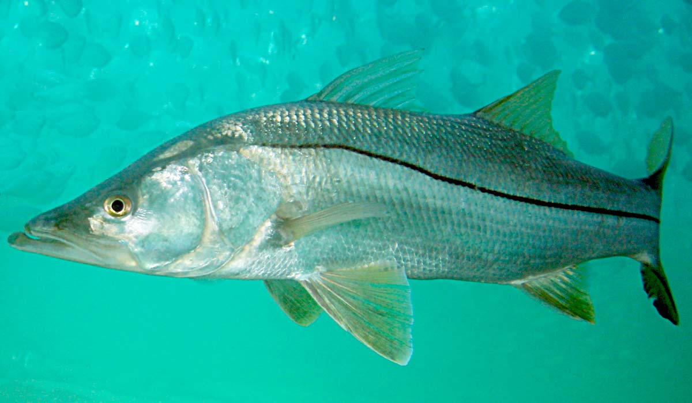

.png)
Coqueiros (Praia do Meio e Praia da Saudade)
Introdução
Em Coqueiros, as praias do Meio e da Saudade, localizada na parte continental de Florianópolis, é uma pequena e charmosa praia urbana que oferece uma vista panorâmica deslumbrante da Baía Sul e da Ponte Hercílio Luz. Com uma faixa de areia curta e águas calmas, é um local popular para caminhadas, corridas e atividades ao ar livre, contando com uma orla bem cuidada e um calçadão que convida à contemplação e ao lazer. Coqueiros é também conhecida por sua excelente infraestrutura gastronômica, com diversos bares e restaurantes que servem desde frutos do mar até culinária internacional, atraindo tanto moradores locais quanto turistas. A praia é um ponto de encontro social e familiar, ideal para passeios tranquilos e para apreciar o pôr do sol. A proximidade com o centro de Florianópolis e a facilidade de acesso fazem da Praia de Coqueiros uma opção conveniente para quem busca um refúgio urbano com belas paisagens, boa comida e um ambiente acolhedor.
Especies
Baiacu

https://olhardigital.com.br/2024/02/12/ciencia-e-espaco/baiacu-e-perigoso-entenda-por-que-peixe-e-venenoso/
Tetraodontidae (conhecido também como baiacu), peixe comumente encontrado em formações coralinas. Tem como principal característica conseguir inflar o seu corpo, fazendo isto engolindo água ou ar além de possuir o hábito de buscar alimentos no período noturno em áreas de vegetações marinhas.
Bagre

https://cetesb.sp.gov.br/blog/2016/01/27/incidencia-de-ferimentos-causados-por-ferrao-de-bagre-preocupa-turistas/
Siluriformes (conhecido também como bagre), peixe comumente encontrado em costeiras tropicais e subtropicais em águas de pouca profundidade, possuindo o fundo arenoso ou lodoso. Tem como principais características ser um peixe de uma certa facilidade de ser pescado, ou seja, é um peixe característico da pesca esportiva, além de ser um peixe que consegue viver tanto em águas limpas tanto em águas com lama. Por fim sobre a alimentação do bagre, ele como desde caranguejos, pequenos peixes ou até mesmo plantas;
Corvina

https://www.cpt.com.br/artigos/peixes-de-agua-doce-do-brasil-corvina-plagioscion-squamosissimus
Plagioscion squamosissimus (conhecido também como Corvina, Pescada-Branca e Pescada-do-Piauí) o Corvina é um peixe que habita poços, remansos e reservatórios, vivendo em lugares fundos e de meia água. Se caracteriza pela coloração prata azulada, boca oblíqua, com um grande número de dentes recurvados e pontiagudos, possui também espinhos nas nadadeiras e duas nadadeiras dorsais. Pode alcançar mais de 50 cm e atingir até os 4,5 kg.
Robalo
https://www.ruraltectv.com.br/como-criar-robalo/
Centrpomus parallelus (conhecido também como robalo), peixe comumente encontrado em costas, porém para conseguir se alimentar o famoso robalo ocupa estuários e rios. Tem como principal hábito ser um peixe solitário além de ser um predador, que se alimenta principalmente de alimentos como crustáceos, moluscos, camarões e pequenos peixes;
Guaivira

https://fishcode.com.br/products/guaivira
Oligoplites saurus (conhecido também como guaivira, guaibira, goivira, cavaco, tábua, tiburo, tibiro, solteira e pamparrona) são encontrados perto da costa, geralmente ao longo de praias arenosas, em baías, enseadas e em águas doces, preferindo águas turvas. Eles ocorrem em cardumes, geralmente grandes e em movimento rápido, muitas vezes saltando para fora da água. Seu alimento geralmente quando estão na fase adulta são peixes menores e crustáceos. As espinhas dorsal e anal estão conectadas a glândulas venenosas que podem infligir feridas dolorosas caso seja ameaçado.
Carapicu
https://paginasdabio.ufpr.br/carapicu/
Os Eucinostomus gula, popularmente chamados de carapicus como muitas espécies de peixes, possuem cromatóforos (células especializadas que permitem ajustar a sua coloração) , oque permite mudarem a intensidade de seus padrões de cores, os machos podem exibir cores vibrantes para atrair fêmes, podem alterar também sua coloração em resposta a ameaças ou para se misturar com o ambiente, fornecendo-lhes camuflagem contra predadores ou presas. Os carapicus são comumente encontrados nas águas costeiras do Oceano Atlântico ocidental, desde a Flórida até o Brasil, habitando águas rasas, incluindo estuários, baías e fundos arenosos ou lamacentos. Animais onívoros, eles se alimentam de pequenos invertebrados, plâncton e detritos.
Balneabilidade
As praias do Meio e da Saudade, em Coqueiros, localizada em um ambiente urbano em Florianópolis, foi dividida em dois trechos principais para avaliação da balneabilidade em 22/05/2024. Ambos os trechos foram considerados impróprios para banho, com concentrações de coliformes fecais de 262 nmp/100ml e 175 nmp/100ml, respectivamente. Em 26/03/2024, um dos trechos apresentou um elevado número de E. coli, alcançando 3654 nmp/100ml, o que impactou diretamente na qualidade da água e o tornou impróprio para banho. A média geral de coliformes fecais na Praia de Coqueiros foi de 218,5 nmp/100ml, indicando uma situação de impróprio para banho, de acordo com os critérios de balneabilidade. Esses resultados ressaltam a necessidade de monitoramento contínuo e melhorias nas condições sanitárias para garantir a segurança dos banhistas e a preservação ambiental na Praia de Coqueiros.